측량및지형공간정보기사 (2011-10-02 기출문제)
1과목: 측지학 및 위성측위시스템
1. 삼각수준측량에 있어서 정밀도를 1:30000로 제한하면 지구 곡률과 대기굴절을 고려하지 않아도 되는 최대 시준거리는 약 몇 m 이내인가? (단, 지구 곡률반지름 : 6370km, 광선의 굴절계수 : 0.13)
- 22m
- 244m
- 48m
- 699m
(정답률: 59%)

2. 임의 지점에서 GPS 관측을 수행하여 타원체고(h) 57.234를 획득하였다. 그 지점의 지구중력장 모델로부터 산정한 지오이드고(N)가 25.578m이었다면 점표고(H)는?
- -31.656m
- 31.656m
- 57.234m
- 82.812m
(정답률: 87%)
3. 다음 중 DGPS에 의해서 소거되지 않는 오차는?
- 전리층 오차
- 위성시계오차
- 사이클 슬립
- 위성궤도오차
(정답률: 96%)
4. 지표면상 구면삼각형의 세각을 관측한 결과 ∠A=50° 20', ∠B=66° 25', ∠C=64° 35' 이었다면 지구의 곡률반지름이 6370km라고 할 때, 구면삼각형 ABC의 면적은?
- 266000km2
- 422000km2
- 711000km2
- 944000km2
(정답률: 58%)
5. 중력가속도 1mgal과 같은 것은?
- 10-1cm/sec2
- 10-2cm/sec2
- 10-3cm/sec2
- 10-4cm/sec2
(정답률: 77%)
6. 지자기측량에서 필요한 보정이 아닌 것은?
- 일변화 및 기계오차에 의한 시간적 변화 보정
- 기준점 보정
- 온도 보정
- 태양 고도각 보정
(정답률: 56%)
7. 측지선에 대한 설명으로 옳은 것은?
- 자오선과 항상 일정한 방위각을 갖는 지표상의 선
- 지구면(곡면)상의 두 점을 지나는 최단거리 곡선
- 지구중심을 포함하는 임의의 평면과 지평선의 교선
- 적도와 나란한 평면과 지표면의 교선
(정답률: 83%)
8. DGPS 측위에 대한 설명 중 틀린 것은?
- 위치를 알고 있는 기지점과 위치를 모르는 미지점에서 동시에 관측한다.
- 최소한 4개의 위성이 필요하다.
- 기지점과 미지점의 거리가 길수록 측위정확도가 높다.
- 기지점과 미지점에서의 오차가 유사할 것이라는 기점을 이용한다.
(정답률: 93%)
9. 탄성파 측량에 대한 설명으로 틀린 것은?
- 탄성파 측량은 굴정법과 반사법이 있다.
- 탄성파의 전파속도 관측으로 지반탐사가 가능하다.
- 탄성파에는 전자기파와 내면파 2종류가 있다.
- 탄성파는 탄성체에 충격으로 급격한 변형을 주었을 때 생기는 파이다.
(정답률: 73%)
10. 위도에 대한 설명으로 틀린 것은?
- 지구상의 한 점에서 회전타원체의 법선이 적도면과 만드는 각을 측지위도라 한다.
- 지구상의 한 점에서 지오이드에 대한 연직선이 천구의 적도면과 이루는 각을 천문위도라 한다.
- 지구상의 한 점과 지구중심을 잇는 직선이 적도면과 이루는 각을 지심위도라 한다.
- 위도는 어떤 지점에서 준거 타원체의 점선이 적도면과 이루는 각으로 표시된다.
(정답률: 53%)
11. 우리나라 평면 직각좌표의 원점은 어떻게 구성되어 있는가?
- 서해, 내륙, 중부, 동해 원점
- 동부, 서부, 내부, 중부 원점
- 동부, 서부, 중부, 동해 원점
- 동해, 남부, 북부, 중부 원점
(정답률: 100%)
12. GPS 위성과 수신기 간의 거리를 측정할 수 있는 재원과 관계가 먼 것은?
- P 코드
- CA 코드
- L1 반송파
- E1 코드
(정답률: 94%)
13. GPS의 신호가 단절될 때 연속적인 위치 및 자세 결정을 위하여 GPS와 결합하여 활용하는 시스템은?
- 전자파거리측량기(DOM)
- 관성합법장치(INS)
- 속도계
- 나침반
(정답률: 84%)
14. 위성측위시스템(GPS)에 대한 설명 중 틀린 것은?
- GPS측량에 의한 위치결정은 비교적 복잡한 시가지지역에서 용이하다.
- 인공위성의 섭동을 해적함으로서 지구의 물리적인 특성을 규명할 수 있다.
- 위성의 위치, 거리, 거리 변화 등의 관측이 가능하다.
- GPS수신기를 이용한 방향측정은 두 대 이상의 다중안테나 시스템에 의해서 가능하다.
(정답률: 64%)
15. 어느 점의 위치를 표시하는 방법 중 거리와 방향(각)으로 위치를 표시하는 좌표를 우엇이라고 하는가?
- 극좌표
- 지리좌표
- 평면직각좌표
- 3차원 직각좌표
(정답률: 64%)
16. 다음 중 위치기반서비스(LBS)를 위한 실시간 위치결정과 관련이 가장 적은 것은?
- GPS
- GLONASS
- GALILEO
- LANDSAT
(정답률: 73%)
17. 다음 중 가장 정확하게 위치를 결정할 수 있는 자료처리법은?
- 코드를 이용한 단독측위
- 코드를 이용한 상대측위
- 반송파를 이용한 단독측위
- 반송파를 이용한 상대측위
(정답률: 79%)
18. 선박이나 항공기 등의 이동체에서 중력을 관측하는 경우에 이동체 속도의 동ㆍ서 방향성분은 지구 자전축에 대한 자전 각속도의 상대적인 증감효과를 일으켜서 원심가속도의 변화를 가져온다. 지구에 대한 이동체의 상대운동의 영향에 의한 중력효과를 보정하는 것은?
- 에트뵈스(Eotvos)보정
- 조석보정
- 지형보정
- 고도보정
(정답률: 82%)
19. 다음 중에서 물리학적 축지학에 속하지 않는 것은?
- 지구의 형상 해석
- 중력 측정
- 지각 변동 조사
- 시(時)의 결정
(정답률: 73%)
20. GPS의 오차에 대한 설명으로 틀린 것은?
- GPS의 오차에는 위성시계오차, 대기 굴절오차, 수신기 오차 등이 있다.
- 위성의 위치오차는 위성의 배치상태의 오차를 말하며 측점의 좌표계산에는 영향을 주지 않는다.
- 안테나 위상 중심오차는 안테나의 중심과 위상중심의 차이에서 발생하는 오차를 말한다.
- 위성의 기하학적 배치상태가 정밀도에 어떻게 영향을 주는가를 추정할 수 있는 하나의 척도로 DOP(Dilution Of Precision)를 사용한다.
(정답률: 73%)
2과목: 응용측량
21. 다음 중 3점법에 의한 유속 계산을 위하여 관측하여 C수심 위치가 아닌 것은? (단, 수심은 수면으로부터 H라고 가정한다.)
- 0.2H
- 0.4H
- 0.6H
- 0.8H
(정답률: 80%)
22. 그림과 같이 선분 AC, BD 사이에 곡선을 설치하고자 할 때 곡선의 교점에 장애물이 있어 교각을 측정하지 못하고 ∠ACD, ∠CDB 및 CD의 거리를 측정하여 ∠ACD=150°, ∠CDB=90°, CD=200m의 결과를 얻었다. 곡선의 반지름을 330m라고 할 때 C점부터 곡선시점까지의 거리는?
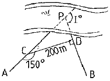
- 419.62m
- 317.72m
- 288.68m
- 256.38m
(정답률: 43%)
23. 평균해수면(mean sea level)에 관한 설명으로 옳지 않는 것은?
- 넓은 지역의 높이의 기준으로서, 조위(潮位)면을 평균해수면이라 한다.
- 평균해수면을 정하기 위해서는 장기간에 걸쳐 해수높이를 관측하여야 한다.
- 조위(潮位)와 변화를 측정하기 위해서는 견고한 암석에 검조잠을 설치한다.
- 기압이 감소하면 해수면도 하강한다.
(정답률: 34%)
24. 다음 중 터너 곡선부의 측설법으로 적절치 못한 것은?
- 중앙종거법
- 현편거법
- 트래버스 측량에 의한 방법
- 접선편거법
(정답률: 42%)
25. 매개변수 A=300m인 대칭기본형 클로소이드 (직선-클로소이드-단곡선-클로소이드-직선)를 설치하고자 한다. 두 직선이 만나는 교각 θ=75° 50‘ 00“ 이고 접속되는 원곡선의 반지름 R=600m일 때 원곡선의 교각 I는 얼마인가?
- 54° 20‘ 51“
- 61° 30‘ 34“
- 68° 40‘ 17“
- 70° 15‘ 30“
(정답률: 57%)
26. 면ㆍ체적 측량에 관한 설명 중 틀린 것은?
- 구적기에 의한 방법은 도면의 축척과 신축 등으로 하여 직접법에 비해 정확도가 다소 떨어진다.
- 각주공식은 다각형인 양단면이 평행이고, 중앙의 면을 구하여 심프슨 제2법칙을 적용하여 구한다.
- 다각측량에서 폐합다각형 내의 면적은 배횡거법으로 할 수 있다.
- 산지에서의 정지적업 또는 매립용량, 저수지담수량, 체적산정 등에는 등고선법이 사용된다.
(정답률: 58%)
27. 곡선반지름이 1200m인 원곡선상을 80km/hr로 주행하려면 캔트(cant)를 얼마로 하여야 하는가? (단, 궤간은 1067m)
- 167m
- 109m
- 1⑤m
- 45m
(정답률: 72%)
28. 면적계산 방법 중 삼각형의 밑변과 높이를 관측하여 면적을 구하는 방법은?
- 삼사법
- 삼변법
- 지거법
- 구적기 사용
(정답률: 54%)
29. 도로설계 횡단도상에서 양단 거리가 20m이고, No.28과 No.29의 면적이 다음과 같다. 양단 ㅅ이의 단면 변화가 일률적이라면 성토량과 절토량은?
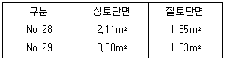
- 성토량 15.3m3, 절토량 31.8m3
- 성토량 26.9m3, 절토량 31.8m3
- 성토량 15.3m3, 절토량 4.8m3
- 성토량 26.9m3, 절토량 4.8m3
(정답률: 37%)
30. 클로소이드의 파라미터 A=60m이고, 곡선길이가 40m인 클로소이드 곡선의 반지름은?
- 60m
- 90m
- 120m
- 150m
(정답률: 63%)
31. 곡률반경 300m, 교각 45°인 원곡선의 곡선잠(C.L)은?
- C.L=235.62m
- C.L=349.32m
- C.L=270.66m
- C.L=290.34m
(정답률: 37%)
32. 지하시설물에 대한 탐사 공정 순서로 옳은 것은?
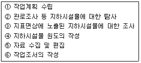
- ①→⑤→③→②→④→⑥
- ①→②→③→④→⑤→⑥
- ①→⑤→④→③→②→①
- ①→②→⑤→④→③→⑥
(정답률: 80%)
33. 하천 평면측량의 범위에 대한 설명으로 틀린 것은?
- 무제부에서는 홍수가 영향을 미치는 구역보다 100m 정도 넓게 한다.
- 유제부에서는 제내지 전부와 제외지 300m 이내로 한다.
- 주운(舟運)을 위한 하천개수공사의 경우 하류는 하구까지로 한다.
- 홍수방지가 목적인 하천공사의 경우 하구에서부터 상류의 홍수피해가 미치는 지점까지로 한다.
(정답률: 57%)
34. 하천수위의 갈수위에 대한 설명으로 옳은 것은?
- 1년을 통하여 355일간은 이것보다 내려가지 않는 수위
- 1년을 통하여 275일간은 이것보다 내려가지 않는 수위
- 1년을 통하여 185일간은 이것보다 내려가지 않는 수위
- 1년을 통하여 125일간은 이것보다 내려가지 않는 수위
(정답률: 77%)
35. 터널 내의 두 측점 좌표가 A(150, 300), B(400, 500)이고 표고가 각각 A=10m, B=20m일 때, AB점을 잇는 터널의 경사각은? (단, 좌표의 단위는 m이다.)
- 약 1° 47‘ 20“
- 약 2° 12‘ 13“
- 약 3° 27‘ 08“
- 약 4° 32‘ 10“
(정답률: 50%)
36. 그림과 같이 삼각형(ABC)을 면적비 m:n 으로 분할할 경우 BD의 길이는?
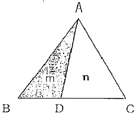
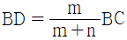
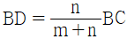
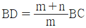
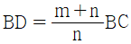
(정답률: 63%)
37. 터널내 중심선 측량과 가장 거리가 먼 것은?
- 중심선 도입측량과 중심말뚝 설치
- 터널내 고저측량
- 터널변형 측정
- 터널 내 곡선설치
(정답률: 60%)
38. 유하거리 정확도가
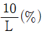
, 유하시간 정확도가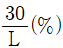
이라면 관측유속 1.0m/sec의 경우 그 오차를 2%이내에 있도록 하기 위한 부지 유하거리(L)로 옳은 것은?- L≥15.8m
- L≥20.8m
- L≥25.8m
- L≥30.8m
(정답률: 50%)
39. 편각법으로 곡선반지름 592.70m인 단곡선을 설치할 경우에 중심말뚝간격 20m에 대한 편각은?
- 57‘
- 58‘
- 59‘
- 60‘
(정답률: 38%)
40. 경관평가에 있어서 시즌선과 시설을 측선이 이루는 수평시각(θ)의 범위로 시설물 전체의 형상을 인식할 수 있고, 경관의 주제로서 적당한 경관을 얻을 수 있는 범위는?
- 0°＜θ≤5°
- 5°＜θ≤10°
- 10°＜θ≤30°
- 50°＜θ≤60°
(정답률: 53%)
3과목: 사진측량 및 원격탐사
41. 도형자료의 점, 선, 면, 위치 등에 대하여 양이나 크기와 관계없이 형상이나 공간적 위치 관계를 규정하는 것을 무엇이라고 하는가?
- 위상설정
- 위치설정
- 종속설정
- 도형설정
(정답률: 47%)
42. GIS에서 래스터자료의 압축기법이 아닌 것은?
- run-length code 기법
- quadtree 기법
- block code 기법
- DBMS 기법
(정답률: 64%)
43. GIS를 사용하여 발생되는 장점이 아닌 것은?
- 수치데이터로 구축되어 출력물의 축척변환이 용이하다.
- 기존의 수작업으로 하는 작업을 컴퓨터를 이용하여 손쉽게 할 수 있다.
- GIS 데이터는 CAD와 비교하여 데이터의 형식이 간단하여 취급이 쉽다.
- 다양한 공간적 분석이 가능하여 도시계획, 환경, 생태 등 다양한 분야에서 의사결정에 활용될 수 있다.
(정답률: 78%)
44. SAR(Synthetic Aperture Radar)에 대한 설명으로 틀린 것은?
- 야간에도 데이터 획득이 가능하다.
- 측면방향으로 데이터를 획득할 수 있다.
- DEM 생성이 가능하다.
- 수동적 광학센서를 사용한다.
(정답률: 70%)
45. 지상좌표계로 XY평면좌표가 (100,100)m인 건물의 모서리가 사진 상의 (9, 11)mm위치에 나타났다. 사진의 주점의 위치가 (-1, 1)mm이고, 투영중심은 (0.0, 1530)m이라면 이 사진의 축척은? (단, 사진좌표계와 지상좌표계의 모든 좌표측의 방향은 일치한다.)
- 1:1000
- 1:2000
- 1:5000
- 1:10000
(정답률: 27%)
46. 한 사진상에서 주점을 지나는 직선 AB의 길이가 5.0cm이고 AB에 해당하는 길이가 1:20000 지형도에서 12cm이었을 때 사진이 축척은?
- 1:2400
- 1:4800
- 1:24000
- 1:48000
(정답률: 48%)
47. 해발고도 3000m에서 촬영한 면적사진이 있다. 이 사진상에서 표고 120m 지점에 길이 4.0mm로 찍혀있는 교량의 실제길이는? (단, 사용된 사진기의 초점거리는 150mm)
- 70.8m
- 74.6m
- 76.8m
- 80.0m
(정답률: 34%)
48. 지리정보시스템의 자료특성에 대한 설명 중 틀린 것은?
- 벡터(Vector)자료는 점(point), 선(line), 면(polygon) 자료구조로 단순화하여 좌표를 통해 실세계의 지형지물을 표현한 자료로 수치지도가 이에 속한다.
- 래스터(raster)자료는 균등하게 분할된 격자모델로 최소 단위인 화소(pixel) 또는 셀(cell)로 구성된 자료로 항공영상, 위성영상이 대표적이다.
- 속성정보는 지도상의 특성이나 질, 지형지물의 관계 등을 문자나 숫자형태로 나타낸 자료로 대장, 보고서 등이 이에 속한다.
- 위치정보는 정대위치정보만으로 구성되며 영상이나 지도위의 점, 선, 면의 형상을 나타내는 자료이다.
(정답률: 50%)
49. 수치지형모형(DTM)으로부터 추출할 수 있는 정보로 가장 거리가 먼 것은?
- 경사분석도
- 가시권 분석도
- 사면방향도
- 토지이용현황도
(정답률: 59%)
50. 유비쿼터스(ubiquitous)의 정의로 옳은 것은?
- 시간과 장소에 구애받지 않고 언제 어디서나 원하는 정보에 접근할 수 있는 기술이나 환경
- 인공지능 컴퓨터와 로봇에 의하여 사람의 노동력이 최소화 될 수 있는 기술이나 환경
- 복지사회가 구현되어 사람들이 편안하고 행복하게 살 수 있도록 하는 이상적인 기술이나 환경
- GPS와 GIS를 결합하여 4차원 정보관리를 할 수 있는 기술이나 환경
(정답률: 88%)
51. 해석적 항공삼각측량 방법 중 번들조정법(광속조정법)에서 적용하는 기본 수학모형식은 무엇인가?
- 공선조건식
- 공면조건식
- 공액조건식
- 공간조건식
(정답률: 67%)
52. GIS 분석 방법 중 유클리디언 거리 공식을 이용하는 방법은?
- 면 사상 중첩 분석
- 버퍼 분석
- 선 사상 중첩 분석
- 인접성 분석
(정답률: 77%)
53. 광각사진기를 이용하여 수직 촬영한 경우, 그림의 건물 높이는? (단, 촬영고도=400m, r=10cm, △r=1cm)
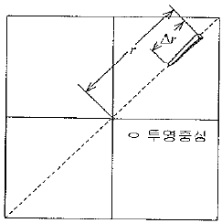
- 4m
- 10m
- 20m
- 40m
(정답률: 53%)
54. 사진판독에 대한 설명으로 옳지 않은 것은?
- 사진판독은 촬영된 시기 및 시각과 지방의 특색에 주의해야 한다.
- 입체시를 이용하면 산지 지형에 대한 판독에 도움이 된다.
- 사진의 축척에 따라 질감의 판독대상이 달라진다.
- 사진판독에 있어서는 참고문헌이나 지도 등을 비교하여 판단하는 것은 선입견 때문에 좋지 않다.
(정답률: 69%)
55. 항공사진측량에 의한 지도제작시 정확도 향상 방법으로 옳지 않은 것은?
- 지상기준점 밀도를 증가시킨다.
- 성능이 높은 도화기를 사용한다.
- 대축척사진을 이용한다.
- 비행고도를 높인다.
(정답률: 67%)
56. GIS 데이터베이스의 관리 및 구축시 적용하는 DBMS방식의 내용으로 옳지 않은 것은?
- 파일처리방식의 단점을 보완한 방식이다.
- DBMS프로그램은 독립적으로 운영될 수 있다.
- 데이터베이스와 사용자간 모든 자료의 흐름을 조정하는 중앙제어역할이 가능하다.
- DBMS프로그램은 자료의 신뢰와 동시사용을 위하여 단일 프로그램으로 구성된다.
(정답률: 55%)
57. 격자구조에서 벡터구조로 변환하는 것을 벡터화라 한다. 일반적인 벡터화 과정을 순서대로 나열한 것은? (단, 필터링:Filtering, 세선화 : Thinning, 벡터화단계 : Vectorization, 후처리단계 : Processing)
- 필터링-세선화-벡터화단계-후처리단계
- 필터링-벡터화단계-세선화-후처리단계
- 후처리단계-벡터화단계-필터링-세선화
- 세선화-후처리단계-벡터화단계-필터링
(정답률: 30%)
58. 초점거리 150mm, 사진의 크기 23cm×23cm인 카메라에 의하여 촬영된 축척 1:30000의 할공사진이 있다. 사진은 촬영고도가 동일한 연직사진이며 촬영기준면의 표고는 0m, 인접 사진과의 중복도가 60%일 때, 높이 40m의 철탑이 주점기선의 중앙에 위치하고 있다면 철탑의 기복변위는?
- 0.21mm
- 0.41mm
- 0.62mm
- 0.82mm
(정답률: 47%)
59. 상호표정에 사용하는 요소가 아닌 것은?
- λ(축척계수)
- k(Z축에 대한 회전)
- Φ(y축에 대한 회전)
- ω(X축에 대한 회전)
(정답률: 58%)
60. TIN(Triangular Irregular Network)에 대한 설명으로 틀린 것은?
- 어떠한 연속필드에도 적용할 수 있다.
- 측정한 점의 값은 보존되지 않는다.
- 델로니 삼각망(Delaunay triangulation)으로 분할한다.
- 수치표고모델(DTM : Digital Terrain Model)을 구성하는 방법 중 하나이다.
(정답률: 60%)
4과목: 지리정보시스템
61. 한 측점에서 6개의 방향선 사이의 각을 각관측법(조합각 관측법)으로 관측하였다. 이때 총 각관측수는?
- 20
- 15
- 10
- 5
(정답률: 58%)
62. 그림과 같이 삼각형에서 A점과 B점의 좌표가 각각 (1000m, 1000m), (1500m, 1400m)이고 a=1500.00m, b=1200.00m일 때, 삼변측량을 위한 관측방정식으로 옳은 것은?
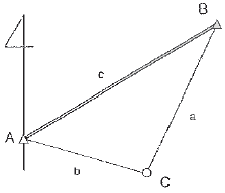
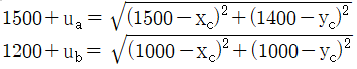
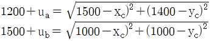
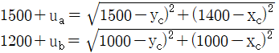
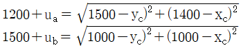
(정답률: 56%)
63. 보기 중 댐의 집수구역이 바르게 표시된 것은?
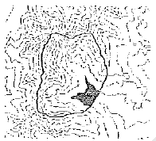
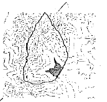
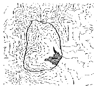
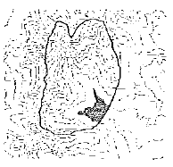
(정답률: 40%)
64. 삼변측량에 대한 설명으로 틀린 것은?
- 삼변측량에 의한 좌표계산은 기지점이 2개 이상인 경우는 두 좌표로부터 방향각이 결정되기 때문에 좌표계산에는 편리하다.
- 삼변측량은 관측값에 비하여 조건식이 많아 조정이 복잡한 것이 단점이다.
- 산변측량은 코사인 제2법칙, 반각공식을 이용하여 변으로부터 각을 결정한다.
- 삼변측량은 조건방정식과 관측방정식에 의하여 조정할 수 있다.
(정답률: 42%)
65. A점(-1750m, -2132m)에서 B점까지의 거리는 500m이고 방향각이 135° 이라면 B점의 좌표는?
- (-354m, 354m)
- (354m, -354m)
- (-1396, 2133m)
- (-2104m, 1778m)
(정답률: 46%)
66. 평균제곱근 오차에 대한 설명으로 틀린 것은?
- 잔차의 제곱을 산술평균한 값의 제곱근
- 표준편차와 같은 의미로 사용
- 독립관측값인 경우의 분산의 제곱근
- 밀도함수 전체의 99.7%인 범위
(정답률: 54%)
67. 다음 중 마라톤 코스와 같은 표면거리를 측정할 수 있는 기기로 가장 적합한 것은?
- 중량이 작은 강철자
- 기선에서 검정된 자전거
- 초장기선 간섭계(VLBI)
- 유리섬유테이츠
(정답률: 63%)
68. 임의 지점 P1의 좌표가 (-2000m, 1000m)이고, 다른 지점 P2의 좌표가 (-1250m, 2299m)일 때
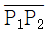
의 방위각은?- 30° 00‘ 03“
- 59° 59‘ 57“
- 210° 00‘ 03“
- 239° 59‘ 57“
(정답률: 53%)
69. 삼각측량의 단열 삼각망은 보통 어느 측량에 많이 사용되는가?
- 광대한 지역의 지형도를 작성하기 위한 골조측량
- 노선, 하천조사 측량을 하기 위한 골조측량
- 복잡한 지형측량을 하기 위한 골조측량
- 시가지와 같은 정밀을 요하는 골조측량
(정답률: 36%)
70. 평균고도 300m의 두 지점 A, B간의 기선의 길이를 관측하였더니 수평거리가 400,423m 이었다면 평균해수면에 투영한
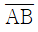
의 거리는? (단, 지구의 반경은 6400km로 가정한다.- 400,135m
- 400.235m
- 400.335m
- 400.404m
(정답률: 46%)
71. 아래와 같이 기지점 A, B, C에서 출발하여 교점 P의 좌표를 구하기 위한 다각측량을 행하였다. 교점 P의 좌표의 최확값(xo, xy)은?
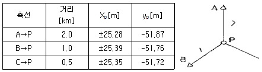
- xo=±25.34m, yo=-51.78m
- xo=±25.35m, yo=-51.75m
- xo=±25.32m, yo=-51.82m
- xo=±25.32m, yo=-51.75m
(정답률: 25%)
72. 수준측량에서 발생하는 기계적 오차가 아닌 것은?
- 표척눈금의 부정확
- 표척 이음부의 불완전
- 삼각대의 느슨함에 따른 기기정치의 불완전
- 표척의 기울기에 따른 오차
(정답률: 37%)
73. 등고선에 관한 설명으로 옳지 않은 것은?
- 주곡선은 지형을 나타내는 기본이 되는 곡선으로 실선은 축척에 따라 다르게 결정된다.
- 간곡선은 주곡선 간격의 1/2로 표시하며, 주곡선으로는 자모의 상태를 명시할 수 없는 장소에 가는 실선으로 나타낸다.
- 조곡선은 간곡선 간격의 1/2로 표시하는데, 표현이 만족한 곳에 가는 실선으로 나타낸다.
- 계곡선은 자모의 상태를 파악하고 등고선의 고저차를 쉽게 판독할 수 있도록 주곡선 5개마다 굵은 실선으로 나타낸다.
(정답률: 34%)
74. 1:25000의 지형측량에서 등고선을 그리기 위하여 결정측점의 도상 위치오차가 1.0m, 높이의 오차가 2.5m, 지점의 경사각을 10°라 할 때 표고의 최대이동량은 얼마인가?
- 17m
- 7m
- 5m
- 4m
(정답률: 46%)
75. 수준측량에 대한 설명 중 옳지 않은 것은?
- 레벨은 가능한 한 두 표척을 잇는 직선상에 세워야 한다.
- 레벨과 후시 및 전시 표적과의 거리는 되도록 같게 한다.
- 1등수준측량에서는 표척의 아래쪽 20cm 이하는 읽지 않는다.
- 수준점과의 편도관측의 측점수는 홀수로 하는 것이 좋다.
(정답률: 45%)
76. 트래버스측량의 각 관측에서 오차가 생겼을 때, 허용범위안에 있을 경우의 오차배분에 대한 설명으로 옳지 않은 것은?
- 각 관측의 정확도가 같을 때는 오차를 각의 대소에 관계없이 등분하여 배분한다.
- 각 관측의 경중률이 다를 경우에는 그 오차를 경중률을 고려하여 배분한다.
- 각 관측은 경중률이 같을 경우에는 각의 크기에 비례하여 배분한다.
- 변길이의 역수에 비례하여 각 관측각에 배분한다.
(정답률: 27%)
77. 직접수준측량의 용어에 대해 잘못 설명한 것은?
- 표고를 이미 알고 있는 점에 세운 수준척 눈금의 읽음을 후시라 한다.
- 표고를 알고자 하는 곳에 세운 수준척 눈금의 읽음을 전시라 한다.
- 측량도중 레벨을 옮겨 세우기 위하여 한 측점에서 전ㆍ후시를 동시에 읽을 때 그 측점을 이기점이라 한다.
- 망원경의 시준선의 표고를 지반고라 한다.
(정답률: 25%)
78. 측량성과에 대하여 조정 계산한 결과에서 좌표의 표준오차가 얼마라고 말할 때 이와 관련이 있는 오차는?
- 부정오차
- 정오차
- 착오
- 실수
(정답률: 42%)
79. 그림은 삼각측량에서의 좌표계산을 위한 것이다. A점의 좌표(XA, YA)를 알고 C점의 좌표를 계산하는 식으로 옳은 것은? (단, T는 방향각이고 S는 변장임)
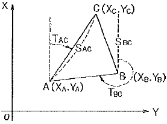
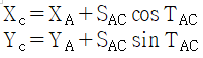
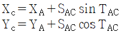
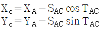
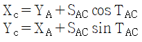
(정답률: 48%)
80. 다음 중 3차원 위치성과를 획득할 수 없는 측량장비는?
- 토탈스테이션
- 레벨
- LIDAR
- GPS
(정답률: 66%)
5과목: 측량학
81. 측량기술자의 자격기준에 대한 설명으로 옳지 않은 것은?
- 기사 자격을 취득한 사람으로서 7년간 측량업무를 수행한 사람은 고급기술자이다.
- 산업기사 자격을 취득한 사람으로서 10년간 측량업무를 수행한 사람은 고급기술자이다.
- 기사 자격을 취득한 사람으로서 3년간 측량업무를 수행한 사람은 중급기술자이다.
- 기사 자격을 취득한 사람으로서 1년간 측량업무를 수행한 사람은 초급기술자이다.
(정답률: 26%)
82. 측량업자로서 속임수, 위력, 그 밖의 방법으로 측량업과 관련된 입찰의 공정성을 해친 자에 대한 벌칙 기준은?
- 3년 이하의 징역 또는 3천만원 이하의 벌금
- 2년 이하의 징역 또는 3천만원 이하의 벌금
- 1년 이하의 징역 또는 3천만원 이하의 벌금
- 300만원 이하의 과태료
(정답률: 82%)
83. 측량ㆍ수로조사 및 지적에 관한 법률에서 사용하는 용어의 정의로 옳지 않은 것은?
- 기본측량이란 모든 측량의 기초가 되는 공간정보를 제공하기 위하여 대통령이 실시하는 측량을 말한다.
- 측량성과란 측량을 통하여 얻은 최종 결과를 말한다.
- 일반측량이란 기본측량, 공공측량, 지적측량 및 수로측량 외의 측량을 말한다.
- 측량기록이란 측량성과를 얻을 때까지의 측량에 관한 작업의 기록을 말한다.
(정답률: 67%)
84. 공공측량성과 심사시 측량성과 심사수탁기관이 심사결과의 통지기간을 10일 범위에서 연장할 수 있는 경우로 옳지 않은 것은?
- 성과심사 대상지역의 측량성과가 오차가 많을 때
- 성과심사 대상지역의 기상악화 및 천재지변 등으로 심사가 곤란할 때
- 지상현황측량, 수치지도 및 수치표고자료 등의 성과심사량이 면적 10제곱킬로미터 이상 또는 노선 길이 600킬로미터 이상일 때
- 지하시설물도 및 수심측량의 심사량이 200킬로미터 이상일 때
(정답률: 54%)
85. 공공측량시행자는 공공측량을 하기 몇 일 전에 공공측량 작업계획서를 제출하여야 하는가?
- 30일
- 40일
- 50일
- 60일
(정답률: 65%)
86. 지도 등의 판매가격을 결정하고 판매ㆍ배포 및 그 밖의 세부사항을 결정하는 자는?
- 국토해양부장관
- 국토지리정보원장
- 서울특별시장, 광역시장 또는 도지사
- 시장, 군수
(정답률: 55%)
87. 등고선에 의하여 표현되는 것은?
- 지상
- 지모
- 지류
- 지물
(정답률: 50%)
88. 국토지리정보원장이 간행하는 지도나 그밖에 필요한 간행물의 종류가 아닌 것은?
- 축척 1/2500의 지도
- 축척 1/20000의 지도
- 철도, 도로, 하천, 해안선, 건물, 수치표고모델, 정사영상 등에 관한 기본 공간정보
- 3차원 공간정보
(정답률: 47%)
89. 심사를 받지 아니하고 지도 등을 간행하여 판매하거나 배포한 자가 받는 벌칙으로 옳은 것은?
- 300만원 이하의 과태료
- 1년 이하의 징역 또는 1천만원 이하의 벌금
- 2년 이하의 징역 또는 2천만원 이하의 벌금
- 3년 이하의 징역 또는 3천만원 이하의 벌금
(정답률: 27%)
90. 1:5000 지형도의 도엽의 1구획으로 옳은 것은?
- 경위도차 1분 30초
- 경위도차 7분 30초
- 경위도차 15분
- 경위도차 30분
(정답률: 32%)
91. 일반측량은 어떤 측량성과 및 측량기록을 기초로 실시하는가?
- 기본측량ㆍ공공측량 성과 및 그 측량기록
- 지형측량 성과 및 측량기록
- 도근측량 성과 및 측량기록
- 삼각측량 성과 및 측량기록
(정답률: 64%)
92. 우리나라 측량의 기준으로써 위치 측정의 기준인 세계측지계에 대한 설명으로 옳지 않은 것은?
- 지구를 편평한 회전타원체로 상정하여 실시하는 위치측정의 기준이다.
- 극지방의 지오이드가 회전타원체 면과 일치하여야 한다.
- 회전타원체의 단축이 지구의 자전축과 일치하여야 한다.
- 회전타원체의 장반경은 6.379.137미터이다.
(정답률: 60%)
93. 측량ㆍ수로조사 및 지적에 관한 법률의 제정 목적과 거리가 먼 것은?
- 국토의 효율적 관리
- 국민의 소유권 보호
- 해상 교통안전의 기여
- 측량 및 수로조사의 기술 향상
(정답률: 65%)
94. 공공측량 작업계획서에 포함되어야 할 사항이 아닌 것은?
- 사용할 측량기기의 종류 및 성능
- 공공측량의 작업방법
- 공공측량의 사업명
- 공공측량의 성과심사ㆍ수탁기관
(정답률: 34%)
95. 측량기기의 성능검사대행자 등록의 결격사유에 해당되지 않는 것은?
- 한정치산자
- 폐업 후 3년이 경과되지 아니한 법인
- 임원중 금치산자가 있는 법인
- 등록이 취소된 후 2년이 경과되지 아니한 자
(정답률: 16%)
96. 측량업자의 지위 승계에 관한 내용으로 ()안에 옳은 것은?
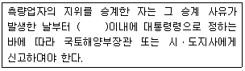
- 7일
- 10일
- 20일
- 30일
(정답률: 36%)
97. 공공측량의 정의에서 “대통령령으로 정하는 공공측량”에 속하지 않는 것은?
- 측량노선의 길이가 1킬로미터 이상인 기준점측량
- 국토해양부장관이 발행하는 지도의 축척과 같은 축척의 지도 제작
- 지하시설물 측량
- 인공위성 등에서 취득한 영상정보에 좌표를 부여하기 위한 2차원 또는 3차원의 좌표측량
(정답률: 22%)
98. 측량ㆍ수로조사 및 지적에 관한 법률상 용어의 정의로 옳지 않은 것은?
- 지적측량이란 토지를 지적공부에 등록하거나 지적공부에 등록된 경계점을 지상에 복원하기 위하여 필지의 경계 또는 좌표와 면적을 정하는 측량을 말한다.
- 지번이란 작성된 지적도의 등록번로를 말한다.
- 일반측량이란 기본측량, 공공측량, 공공측량, 지적측량 및 수로측량 외의 측량을 말한다.
- 수로측량이란 해양의 수심ㆍ지구자기ㆍ중력ㆍ지형ㆍ지질의 측량과 해안선 및 이에 딸린 토지의 측량을 말한다.
(정답률: 45%)
99. 기본측량의 실시공고에 포함하여야 할 사항이 아닌 것은?
- 측량의 종류
- 측량의 목적
- 측량의 성과 보관 장소
- 측량의 실시지역
(정답률: 43%)
100. 다음 중 측량업의 종류와 관계없는 것은?
- 측지측량업
- 공간영상도화업
- 항공촬영업
- 지도편집판매업
(정답률: 62%)
하지만 이때 지구 곡률과 대기굴절을 고려하지 않으면 오차가 발생할 수 있다. 따라서 이를 고려하여 최대 시준거리를 구해야 한다.
지구 곡률과 대기굴절을 고려하면 삼각측량에서 측정 가능한 최대 거리는 다음과 같이 계산할 수 있다.
최대 시준거리 = 2 × √(R × h)
여기서 R은 지구 곡률반지름, h는 대기굴절에 의한 광선의 굴절량을 나타낸다.
h는 다음과 같이 계산할 수 있다.
h = (0.13 × d) / 2
여기서 d는 기준선의 길이이다.
따라서 최대 시준거리는 다음과 같이 계산할 수 있다.
최대 시준거리 = 2 × √(R × (0.13 × d) / 2)
= √(R × 0.13 × d)
= √(6370 × 0.13 × 30000)
≈ 48m
따라서 정밀도를 1:30000로 제한하면 지구 곡률과 대기굴절을 고려하지 않아도 되는 최대 시준거리는 약 48m 이내이다.